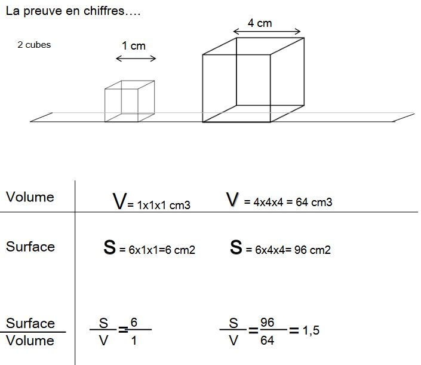

Les adaptations thermique des endothermes
I) Morphologiques
L'isolation
Un endotherme est un animal capable d'élever sa température interne lorsque la température externe diminue grâce à son métabolisme élevé et aussi grâce à l'isolation efficace de son corps qui diminue la conductivité de leur corps. L'air emprisonné dans les plumes ou les poils est un puissant isolant de même que la graisse sous cutanée.
-
Les plumes de duvet
- emprisonne l'air (mauvais conducteur thermique)
- elles sont légères
- elles sont vasculariser (protège les vaisseaux au niveau de la peau)
- peuvent éventuellement recouvrir les pattes et le bec
La piloerection chez les oiseaux est un mécanisme rapide qui permet de faire évoluer l'isolation afin d'emprisonner plus d'air sur un temps très court.
-
La fourrure, efficace contre le froid avec un sous poil très dense. Les animaux peuvent se retrouver dans un milieu très froid qui va varier. Elle va donc varier selon les saisons. Chez l'ours brun, la mue d'été permet une diminution de 50% du pouvoir isolant de la fourure de l'animal
-
La graisse
La piloerection des mammifères est un vestige ancestrale grâce à des muscles horipilateurs qui vont redresser le poil.
Cas particulier chez les enxothermes aquatiques.
Chez les oiseaux, leur couches isolantes vont mouiller, il entretiennent leur plumage avec un substance mais ce n'est pas suffisant donc il vont sécher.
Chez les mammifères exclusivement marins, la graisse va prendre le poids sur les poils
La morphologie d'une même espèce peut changer en fonction des conditions climatiques. Un animal vivant dans un climat chaud sera plus maigre et plus élancé qu'un animal vivant dans un environnement froid.
Le rapport Surface/Volume
Les animaux endothermes de climat froid ont en général des extrémités plus courtes. Règle de Allen.
Selon la règle dite de Bergmann, les petits animaux comme le renard seraient plus gros dans les régions froides. En effet, c'est le rapport Surface/Volume qui importe.
S/V doit être faible car, plus il est faible moins il n'y aura de perte d'énergie sous forme de chaleur
D'une manière générale, les aniamaux des régions polaires sont trapus et ceux des régions chaudes élancés.
Les animaux trapus des régions chaudes vivent dans l'eau ou ont des structures particulières facilitant les pertes de calories.


Plus la masse corporelle est forte, plus le rapport S/V est faible, donc moins l'animal perd de chaleur (car la chaleur perdue est directement proportionnelle à la surface)
II) Anatomiques et Physiologiques
Les adaptations circulatoires
La température corporelle des endothermes est constante mais elle n'est pas homogène au sein de l'organsime il existe des tranferts de chaleur entre les différents organes grâce au flux sanguin (les plus chauds internes vers les plus froids externes): du noyau central à la périphérie.
Zone interne stable thermiquement (noyau central) et zone externe (enveloppe = peau, extrémités) variable thermiquement
La régulation de la circulation sanguine au niveau cutané par vasoconstriction ou vasodilation constitue un échangeur thermique.
Pour le porc, il y a une réaction de chasse au niveau de l'oreille placé à une température de 5°C. Régulièrement, le sang irrigue l'oreille et en augmente la température ce qui évite l'anoxie et le risque de gelure.
Echangeur thermique à contre-courant = Autre type d'échangeur thermique lié à des arrangements anatomiques de veines autour d'une artère centrale au niveau des extrémités des membres. Ils évitent des pertes de chaleur trop importants (fréquent chez les Mammifères marins et Oiseaux)

Chez certaines espèces, les échangeurs thermiques peuvent permettre le refroidissement du milieu externe
Comme le chien où les échangeurs thermiques permettent de refroidir le cerveau lorsque la température ambiante est élevée.
Les échangeurs thermiques de certains hétérothermes
Contrairement à la majorité de poissons (ectothermes), certains sont qualifiés d'hétérothermes régionaux. Ils ne bénéficient pas des rayonnements solaires pour se réchauffer et ce sont des grands nageurs.
Produisent assez de chaleur pour élever la température de leurs muscles de parfois +10°C par rapport à la température entre l'enveloppe et le centre des muscles.
Certains échangeurs thermiques mettent en jeu des muscles profonds
Ce qui est valable pour les gains de chaleur peut l'être aussi pour les pertes
Adaptation au niveau moléculaire
Chez les oiseaux par exemple, une partie des pattes et des doigts est dépourvue de plumes.
Les cellules des tissus en contact avec le substrat froid sont adaptées. Les acides gras des membranes sont en majorité des adcides gras insaturés (avec au moins une liaison c=c entre les deux atomes de carbone). Ces acides gras insaturés ont la particularité de rester fluides à basse température.
Ainsi, la membrane cellulaire garde ses fonctions en particulier pour les échanges gazeux de part et d'autre et la cellule reste fonctionelle.
III) Comportementales
- Le choix de l'environnement
- La construction de microenvironnements
- Les migrations
- Comportements spécifiques